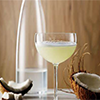

Special Selection Kakanin Bibingka Seasonal P230 A Philippine dessert is usually baked between banana leaves and is made with rice flour, butter, and cheese. Biko P450 A thick, chewy rice cake from the Philippines, is created from sticky rice, coconut milk, and black sugar. Kutsinta P100 Puto cuchinta or kutsinta is a type of steamed rice cake (puto) found throughout the Philippines. Sapin-sapin New P155 Soft, chewy, and topped with golden latik, this Filipino steamed glutinous rice cake is a delicious midday snack or after-dinner dessert. Puto P70 Filipino Steamed Rice Cakes — made with ground rice that has been soaked in water overnight. Puto bumbong P170 Popular in Filipino Cuisine! made by steaming a ground purple rice mixture inside a bamboo tube Pancit Pancit habhab New P60 Pancit Habhab - made from dried flour noodles which are known as miki Lucban. Pancit bihon P65 Traditional dish from the Philippines - made from rice 'sticks' combined with pork or chicken, vegetables and soy sauce. Pancit Canton P60 Lo Mein or tossed noodles known as flour sticks. Palabok New P180 Filipino noodle dish made from cornstarch sticks, which is also known as palabok noodles Mami P70 Popular Filipino noodle soup made with wheat flour noodles, broth and the addition of meat (chicken, beef, pork) or wonton dumplings. Kinalas P80 Bicol dish consisting of noodles (pancit) garnished by scraped meat from pork or beef's head and other parts, enhanced with a thick deep-brown sauce. Drinks Salabat New P170 It is made from fresh ginger and sweetened with honey or sugar and may also be taken with a few drops of lemon juice. Lambanog P1990 It is a clear white with the characteristic aroma of distilled coconut. Kapeng barako P260 Kapeng Barako is a variation of the Liberica species which big cherries and unusual flavour.  Tuba New P200 Bahalina, sometimes called "coconut red wine", is a traditional Filipino palm wine made from fermented coconut or nipa palm sap. Calamansi juice P265 Tastes sharply acidic with a delicate floral note reminiscent of lime, tangerine, and pomelo. Taho P100 It is a beloved snack in the Philippines, almost like a drinkable custard made with warm silken tofu, sago pearls, and arnibal, a simple brown sugar syrup. Open daily from 8:00 am to 11:00 pm Home Home